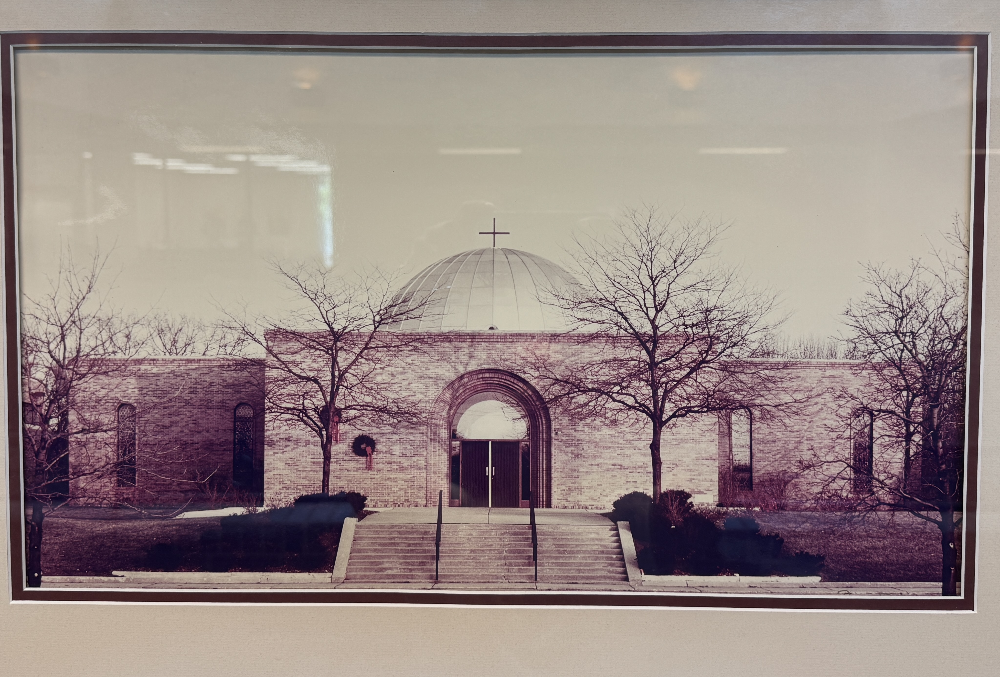

---
---
About — Saints Peter & Paul
{% include nav.html %}
About Us
A parish in Glenview, welcoming everyone since 1960.
We're a Greek Orthodox community rooted in ancient tradition and open to anyone on the path toward Christ — Greek or not, lifelong Orthodox or brand new to it.
Our Mission
"To proclaim the Gospel through Orthodox Christian worship, fellowship, service, and witness."
Purpose
To deeply connect with God and each other.
Vision
To become the holy people of God, welcoming everyone on the path of transformation to experience the love, mercy, and forgiveness of Christ by the power of the Holy Spirit.
Our Faith
What we believe
An ancient faith, still very much alive
Orthodox Christianity traces its roots back to the apostles. At SSPP, that tradition comes alive through the Divine Liturgy, the sacraments, and a community that walks the journey together — however far along the path you are.
It started in the winter of 1958, when a group of Greek Orthodox families in Chicago's northern suburbs realized they needed a parish of their own. By 1959 the state had recognized the community, and Sunday school was already meeting at Crow Island School in Winnetka. The parish received its official charter in March 1960, and four years later — on November 15, 1964 — the first Divine Liturgy was celebrated in the new sanctuary in Glenview.
Growth came fast. The Community Center went up in 1974, the sanctuary was consecrated by Archbishop Iakovos in 1978, and by the early 2000s the dome had been restored with iconography depicting Christ as Pantokrator, the heavenly liturgy, and seventeen saints. Agape Preschool opened around the same time and now serves about 35 kids across four classes.
From the beginning, celebrating the Liturgy in English has been part of how SSPP meets families where they are — and that spirit carries through today. We're not just a parish for those of Greek descent; we welcome Orthodox Christians of every background, interfaith couples, and anyone curious about Orthodoxy.

In 1991, the parish purchased a two-acre parcel of land that became the north parking lot. Over the years, many ministries were added with strong lay leadership, including Cancer Support and Divorce Rebuilders, and in the 1980s the parish built out a dedicated focus on youth programs and staff leadership that continues today.
A number of associate priests and youth directors got their start at SSPP before going on to serve parishes of their own, including Fr. John Demos, Dcn. John Suhayda, Fr. Mark Elliott, Fr. Vladimir Christy, Fr. George Pyle, Fr. Peter Pappas, Fr. George Gartelos, Fr. Andrew Georganas, Fr. Michael Prevas, Fr. Alexander Lukashonok, Fr. Michael Stearns, Fr. Demetri Tobias, Fr. Kosmas Kallis, Fr. Paul Boris Dinkov, and Fr. Peter Sarolas. Two priests — Fr. John Kalantzis and Fr. Andrew Kearns — were attached to the parish while serving as military chaplains at Great Lakes Naval Station.
The iconographers behind our temple
Our neo-Byzantine sanctuary was decorated over several decades by a series of iconographers: John Terzis painted the iconostasis of Christ, the Theotokos, John the Baptist, and Sts. Peter & Paul in 1964–65. Sirio Tonelli created the mosaics of the Virgin Mary Platytera in the apse and Saints Peter and Paul in the narthex in 1965–66. George Filippakis painted Christ Pantokrator, the angelic liturgy, and assorted saints in the dome during the 2000–2001 restoration. More recently, Gianfranco Tassara added portable icons of St. Paraskeve (2022) and St. Demetrios (2024), and Peter Mihalopoulos and Constantine Youssis have contributed additional portable icons of saints and feasts over the years.